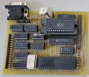
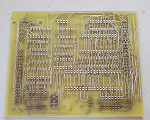
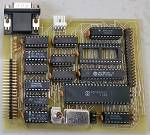
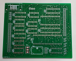
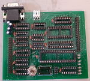
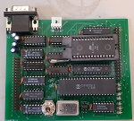
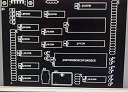
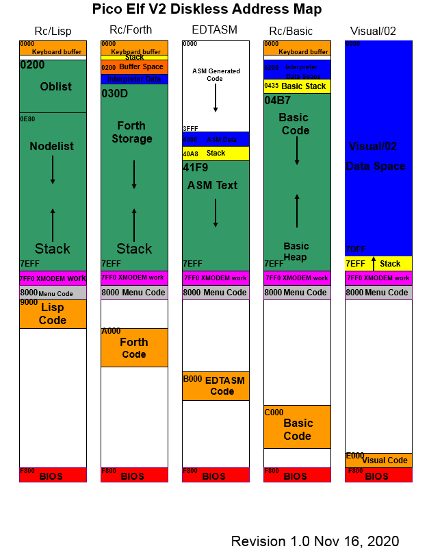

Pico/Elf V2 is an evolution of the Micro/Elf. Pico/Elf removes the address display, data displays, and input togges along with associated circutiry in order to add an RS232 port, ROM socket and IDE/CF interface, allowing for a complete machine capable of running Elf/OS.
Features:
News:
| 11/17/2020 |
Added pinout of expansion connector Added Bernie Murphy's really nice memory map of the Disk-less ROM |
| 10/03/2020 | Updated BOM and posted picture of parts layout |
| 9/29/2020 | The Pico/Elf V2 boards have been ordered |
| 9/28/2020 | Added a download for the Pico/Elf V2 BIOS image. This image contains the Elf/OS installer and the Pico/Elf V2 bios. You can download it here |
| 8/8/2020 | Assembled one of the production prototypes (pictures below). Now I just need to find what I need to run it. |
| 8/4/2020 | Wow that was quick! The test run of 5 boards arrived today. I posted a photo below. Will try to get one built and tested in the next couple days. |
| 8/3/2020 | I received an email this morning indicating the production prototypes are complete and have been shipped. I ordered 5 of these prototypes, I will build 1, leave one unbuilt and for the remaining 3 I would like to see if anybody would like to help testing of the boards. If you are interested in being one of the testers let me know. All I ask is that you have the requisite knowledge, skills, and tools needed to help debug the board should it be needed. As a thank you for helping test the boards, I will provide the boards at no cost. |
| 8/2/2020 |
Official start of this project. At this time 5 test boards have been ordered to check the quality
of the new PCB fab that I am using for this project.
At this time 33 people have requested a total of 50 boards. Thanks to the feedback from the COSMAC group in providing me a more affordable PCB fab, I am also considering ordering a new block of Micro/Elf boards for those who may be interested in them as well. Thanks to the more affordable PCB fab, exptected price per board is $1.25 plus shipping from me to you. Plese note this price is an estimate and may change when the bulk order is placed. |
Preliminary Parts List
Please note this parts list is preliminary and may change as I find better options for some parts. These parts are sourced from Digi-key and Jameco.
| Part | Part Number | Stock Number | Cost | Total cost |
|---|---|---|---|---|
| IC1 | 74ls373 | 296-1660-5-ND | 0.93 | 0.93 |
| IC2 | 27c256 prom | AT27C256R-45PU-ND | 2.11 | 2.11 |
| IC3 | 74ls04 | 296-1629-5-ND | 0.73 | 0.73 |
| IC4 | 74ls138 | 296-1639-5-ND | 0.84 | 0.84 |
| IC5 | 74ls32 | 296-1658-5-ND | 0.61 | 0.61 |
| IC6 | 74ls00 | 296-1626-ND | 0.64 | 0.64 |
| IC7 | Max232 | 296-1402-5-ND | 1.49 | 1.49 |
| IC8 | 74ls75 | 296-3744-5-ND | 2.19 | 2.19 |
| IC9 | 74ls32 | 296-1658-5-ND | 0.61 | 0.61 |
| IC10 | 74ls00 | 296-1626-ND | 0.64 | 0.64 |
| IC11 | 74ls74 | 296-1668-5-ND | 0.61 | 0.61 |
| IC12 | 74ls86 | 296-1669-5-ND | 0.61 | 0.61 |
| IC13 | CY7C199 (32k ram) | 242376 (jameco) | 3.95 | 3.95 |
| IC14 CDP1802 | ??? | ???? | ???? | |
| Crystal Oscillator | 110-MXO45-3C-4M000000-ND | 1.15 | 1.15 | |
| 2x4 pin header | 952-1788-ND | 0.30 | 0.30 | |
| 2x20 pin header | 732-5310-ND | 1.89 | 1.89 | |
| 2x20 pin header | 732-5310-ND | 1.89 | 1.89 | |
| Push button | 2281479 (Jameco) | 8.49 | 8.49 | |
| C1-C4 | 1uf Tantalum Cap | 478-4168-ND | 0.36 | 1.44 |
| C5-C18 | 0.1uf ceramic | 399-9859-1-ND | 0.23 | 3.22 |
| power connector | 232282 (Jameco) | 0.29 | 0.29 | |
| r6-R12 | 47kohm | CF14JT47K0CT-ND | 0.10 | 0.70 |
| R13,R14 | 330ohm | CF14JT330RCT-ND | 0.10 | 0.20 |
| 14pin sockets x 7 | AE9989-ND | 0.22 | 1.54 | |
| 16pin sockets x 3 | AE9992-ND | 0.25 | 0.75 | |
| 20pin socket | AE9998-ND | 0.29 | 0.29 | |
| 28pin .3 socket | 123-AR28-HZL/01/7-TT-ND | 2.54 | 2.54 | |
| 28pin .6 socket | AE10004-ND | 0.42 | 0.42 | |
| 40pin socket | AE10008-ND | 0.51 | 0.51 | |
| Crystal Oscillator socket | A462-ND | 0.75 | 0.75 | |
| Jumper/Shunt | SAM15271-ND | 0.24 | 0.24 | |
| DB9 Male Right angle | 104943 (Jameco) | 0.75 | 0.75 |
For those who prefer to use 74HC parts:
| IC1 | 74hc373 | 296-1591-5-ND | 0.53 | 0.53 |
| IC3 | 74hc04 | 296-1566-5-ND | 0.57 | 0.57 |
| IC4 | 74hc138 | 296-1575-5-ND | 0.44 | 0.44 |
| IC5 | 74hc32 | 296-1589-5-ND | 0.39 | 0.39 |
| IC6 | 74hc00 | 296-1563-5-ND | 0.39 | 0.39 |
| IC8 | 74hc75 | 296-9240-5-ND | 0.89 | 0.89 |
| IC9 | 74hc32 | 296-1589-5-ND | 0.39 | 0.39 |
| IC10 | 74hc00 | 296-1563-5-ND | 0.39 | 0.39 |
| IC11 | 74hc74 | 296-1602-5-ND | 0.39 | 0.39 |
| IC12 | 74hc86 | 296-8375-5-ND | 0.44 | 0.44 |
Expansion Connector:
A0 1 2 D0
A1 3 4 D1
A2 5 6 D2
A3 7 8 D3
A4 9 10 D4
A5 11 12 D5
A6 13 14 D6
A7 15 16 D7
TPA 17 18 TPB
/INP 19 20 EF1
/OUT 21 22 EF2
PORT1 23 24 EF3
/DMA_IN 25 26 EF4
/DMA_OUT 27 28 INT
/MRD 29 30 /MWR
SC0 31 32 SC1
Q 33 34 GND
PORT2 35 36 PORT5
PORT3 37 38 PORT6
PORT4 39 40 PORT7
Gallery:
|  Pico/Elf V1 prototype |
 Unbuilt V2 prototype pcb |
 Pico/Elf V2 prototype |
 Pico/Elf V2 production prototype |
|  Assembled Pico/Elf V2 |
 Populated Pico/Elf V2 |
 Parts Layout |
Here is a really nice memory map produced by Bernie Murphy of the Disk-less ROM:

{kind=link}
{kind=link}
{kind=link}
{kind=link}
{kind=link}
{kind=link}
{kind=link}